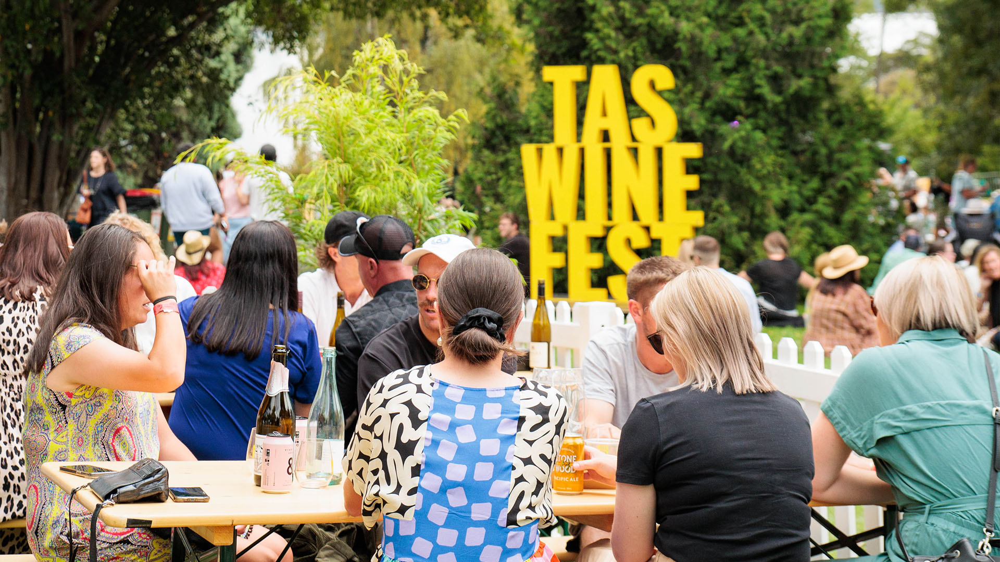
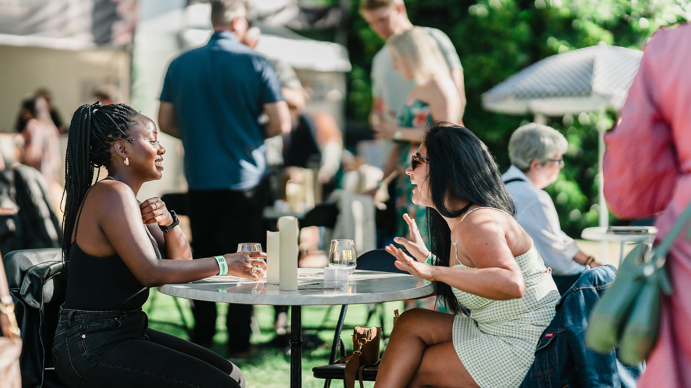

The Discovery Experience
Experience Tasmania's wine and food at their best at the Tasmanian Wine Festival. With live music throughout the day, follow the trail through the scenic Royal Tasmanian Botanical Gardens to find Tasmania's best wine makers, waiting to give you rare insights into their wine & wine making.
The festival will return in 2027.
News Sign Up
A Full Palate Awaits
Featuring over 250 wines from vineyards from all around Tasmania, along with a curated food selection made for pairing.
The main stage will welcome great local entertainment, so get ready to dance the afternoon away or make yourself comfortable on the grass...
See The 2026 Line Up
